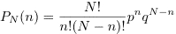

Introduction
The binomial distribution is the result of a Bernoulli process. In such a process each trial has only two outcomes and the result of each trial is independent of all previous trials. Examples of a Bernoulli process are the flips of a coin, the random walk of a drunken sailor in one dimension, and a system of noninteracting magnetic moments with spin 1/2.
To be specific we consider a system of N noninteracting magnetic moments (spins). Each spin has a probability p of being up and a probability q = 1 - p of pointing down. What is the probability that n spins are up? The answer is given by the binomial distribution:

PN(n) is the probability that n spins are up out of N spins.
The Applet/Application
Because PN(n) involves factorials, it is not easy to evaluate PN for large N. To handle N > 20, the program uses Stirling's approximation:
Questions
Java Classes
Updated 27 February 2007.